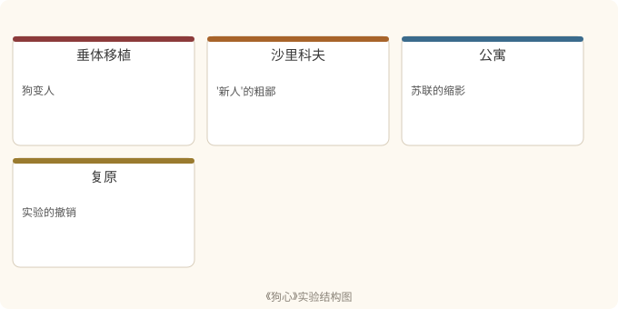

狗心
一、基本信息
| 作者 | 米哈伊尔·布尔加科夫 |
|---|---|
| 成书/出版 | 1925年写成（Britannica：Heart of a Dog written 1925——B225） Mikhail Bulgakov — Encyclopaedia Britannica（百科全书） |
| 国别/地区 | 俄国 |
| 时代 | 现当代 · 20世纪 |
| 体裁 | 中篇小说 |
| 语言 | 俄语 |

《狗心》实验结构图（主题·结构图）
二、创作背景
Britannica（B225）：'In the same year he wrote Sobachye serdtse (Heart of a Dog), a scathing comic satire on pseudoscience'（对伪科学的辛辣滑稽讽刺——B225）。
题材（通说待核）：流浪狗沙里科夫被移植人脑垂体——'人造人'的苏联讽刺。
三、内容脉络
普列奥布拉任斯基教授的器官移植实验——狗变'新人'（通说待核）。
'恢复原状'的结局（通说待核）。
四、主要人物表
| 人物 | 身份 | 说明 |
|---|---|---|
| 沙里科夫 | 狗人 | （通说待核） |
| 普列奥布拉任斯基 | 教授 | 实验者（通说待核） |
五、主题与艺术特点
- 伪科学的讽刺（B225）。
- '新人'工程的荒诞（通说待核）。
- 公寓政治的微型戏（通说）。
六、影响与评论
- Britannica：'a scathing comic satire on pseudoscience'（B225）。
Mikhail Bulgakov — Encyclopaedia Britannica（百科全书） - 作者页：布尔加科夫讽刺谱系（B225 作者级定位）。
Mikhail Bulgakov — Encyclopaedia Britannica（百科全书）
七、阅读建议
难点
- 苏联医学术语戏仿。
- '新经济政策'时代公寓。
- 《狗心》（人民文学出版社/上海译文版本，通说待核）。
- 俄文原版。
先《狗心》后《大师与玛格丽特》。
八、待核实
- 1925年写成、1987年苏联刊出说核对。
- 沙里科夫/普列奥布拉任斯基人名核对。
- 电影改编（1988年说）待核。
本页主要来源
米哈伊尔·布尔加科夫的其他收录作品：大师与玛格丽特